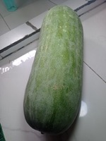

とうがん（冬瓜）の生産量
いちばん多くとれる都道府県
とうがんが日本でいちばん多くとれるのは沖縄県です。2,340 tで、全国（8,140 t）の29%を占めます。

| 順位 | 都道府県 | 収穫量 | 全国に占める割合 |
|---|---|---|---|
| 1位 | 沖縄県 | 2,340 t | 29% |
| 2位 | 愛知県 | 1,330 t | 16% |
| 3位 | 岡山県 | 1,290 t | 16% |
この数字について
- 分類：ウリ科
- 全国の収穫量：8,140 t
- この数字が表すもの：収穫量（畑や田でとれた重さ）
- 調査：地域特産野菜生産状況調査 令和4年産
- 29県分を調査（調査していない県は順位に入りません）